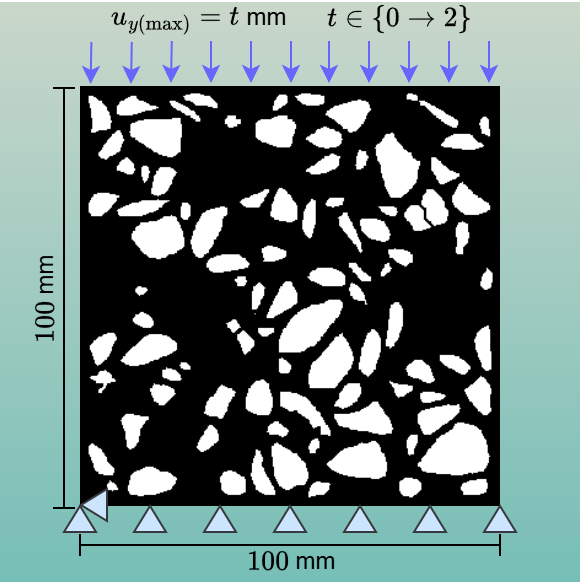
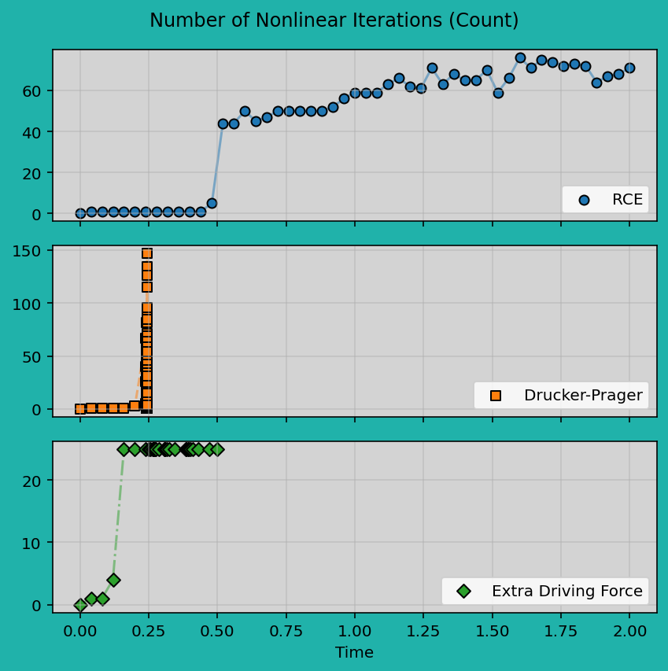
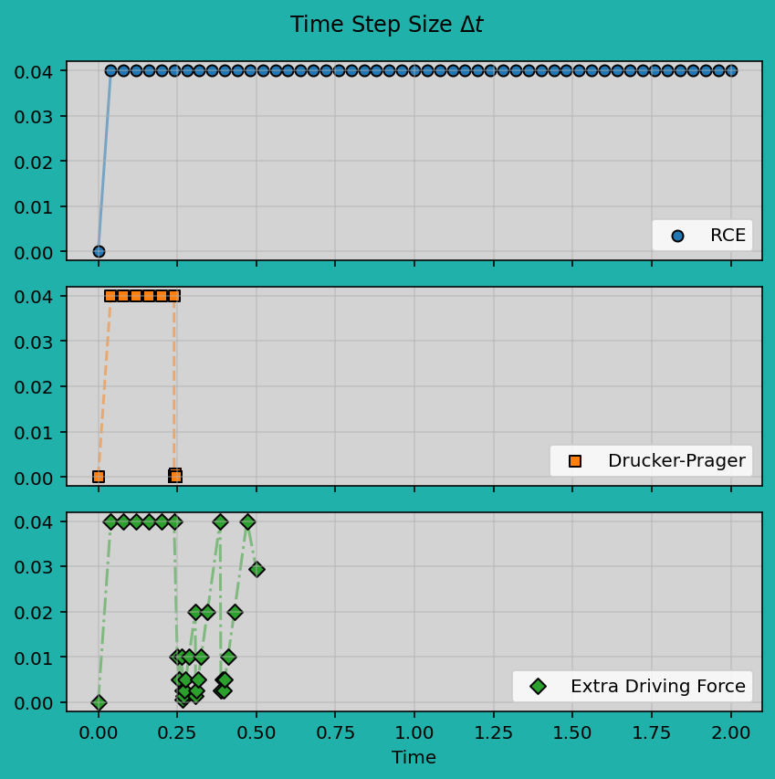
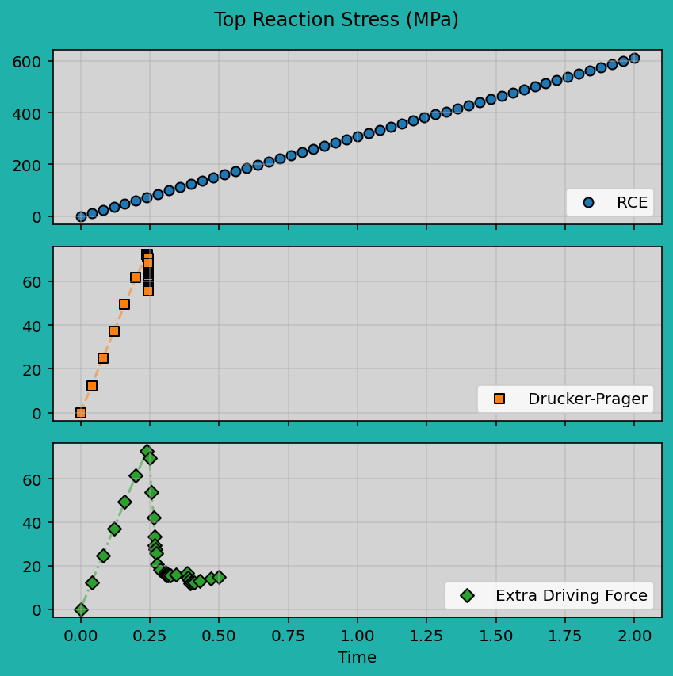

2D Uniaxial Compression Test on a Composite Material
This test uses a \(100\,\text{mm}\times 100\,\text{mm}\) 2D composite material model with a matrix-inclusion structure. The uniaxial compression is applied by fixing \(u_y\) at the bottom edge and constraining \(u_x\) at a single point on the bottom edge to prevent rigid body motion. A prescribed negative \(u_y\) displacement is applied on the top edge to impose compressive loading. The objectives of this example are:
- To demonstrate the geomaterial fracture modeling capabilities of Felino.
- To compare convergence behavior using different phase-field driving energy formulations.
- To evaluate three models: Representative Crack Element (RCE), Drucker-Prager decomposition, and the Extra Driving Force formulation.
Material Parameters and Boundary Conditions
Material parameters are listed in the format (aggregate, cement). For example, Young's modulus is given as \(E = (E_\text{agg}; E_\text{ce})\).

| Parameter | Value |
|---|---|
| Young's Modulus \(E\) (MPa) | 50,000; 25,000 |
| Poisson's Ratio \(\nu\) | 0.2, 0.2 |
| Critical Energy Release Rate \(G_c\) (MPa\(\cdot\)mm) | 0.03; 0.0125 |
| Crack Band Width \(l\) (mm) | 0.2; 0.2 |
| Crack Geometry Function \(\alpha(d)\) | \(d\) |
| Normalization Coefficient \(c_0\) | 2.666667 |
| Drucker-Prager Decomposition | Value |
|---|---|
| Drucker-Prager Parameter \(B\) | -0.484; -0.28 |
| Extra Driving Force | Value |
|---|---|
| Compressive Strength \(\sigma_\text{c}\) (MPa) | 80; 30 |
| Tensile Strength \(\sigma_\text{t}\) (MPa) | 7; 2.5 |
| Crack-Width Coefficient \(\delta^\varepsilon\) | 0.16; 0.64 |
Animation and Results
- The animation takes approximately 15-20 seconds to complete because the Drucker-Prager decomposition model requires a smaller step size for convergence.
- The Drucker-Prager and extra driving force models use additional material parameters, providing users with greater flexibility to incorporate the concept of "material strength."
- This tutorial is simply a demonstration; users should keep in mind that calibration is always necessary in practice.




Input Files
The input files for this tutorial are available below:
References
- Storm, J., D. Supriatna, and M. Kaliske. "The concept of representative crack elements for phase-field fracture: Anisotropic elasticity and thermo-elasticity." International Journal for Numerical Methods in Engineering 121.5 (2020): 779-805.
- Navidtehrani, Yousef, Covadonga Betegon, and Emilio Martinez-Paneda. "A general framework for decomposing the phase field fracture driving force, particularised to a Drucker-Prager failure surface." Theoretical and Applied Fracture Mechanics 121 (2022): 103555.
- Liu, Chang, and Aditya Kumar. "Emergence of tension-compression asymmetry from a complete phase-field approach to brittle fracture." International Journal of Solids and Structures 309 (2025): 113170.